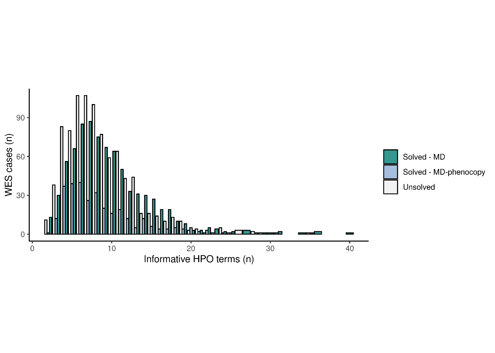
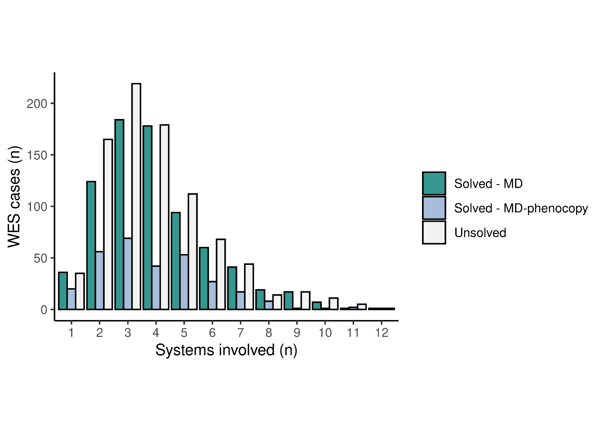
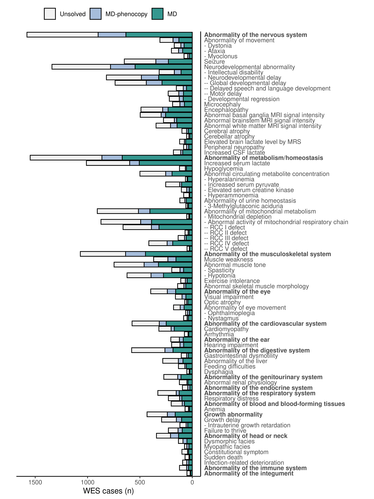
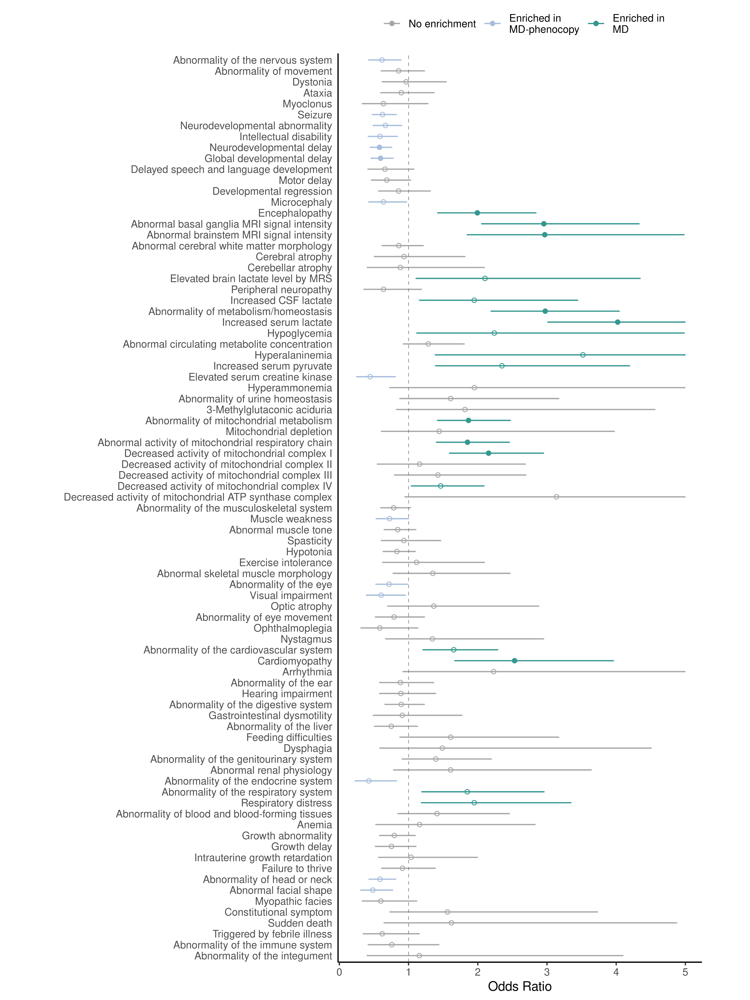
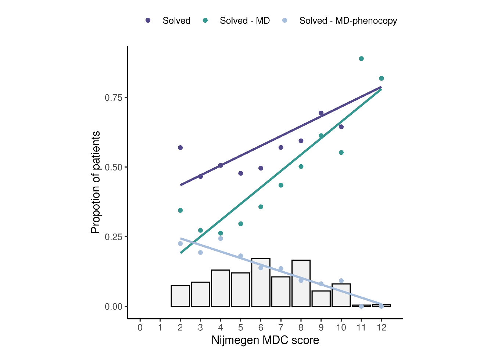
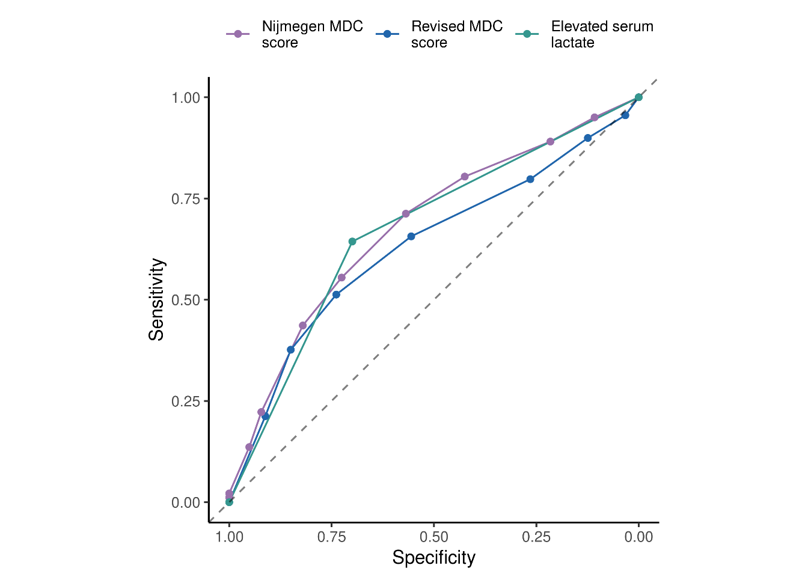
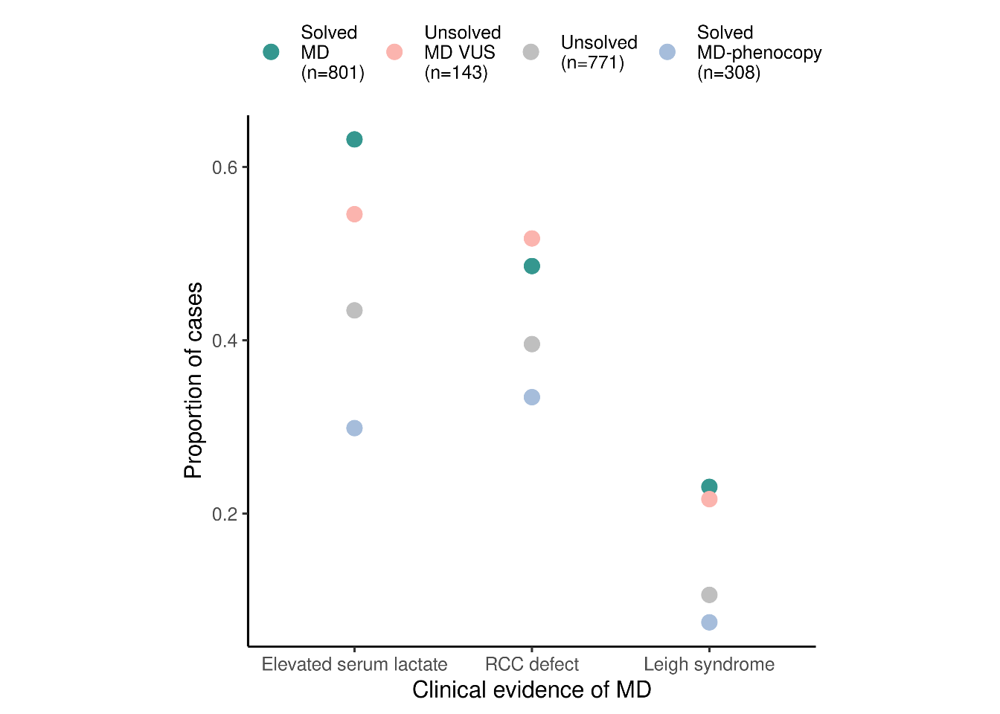
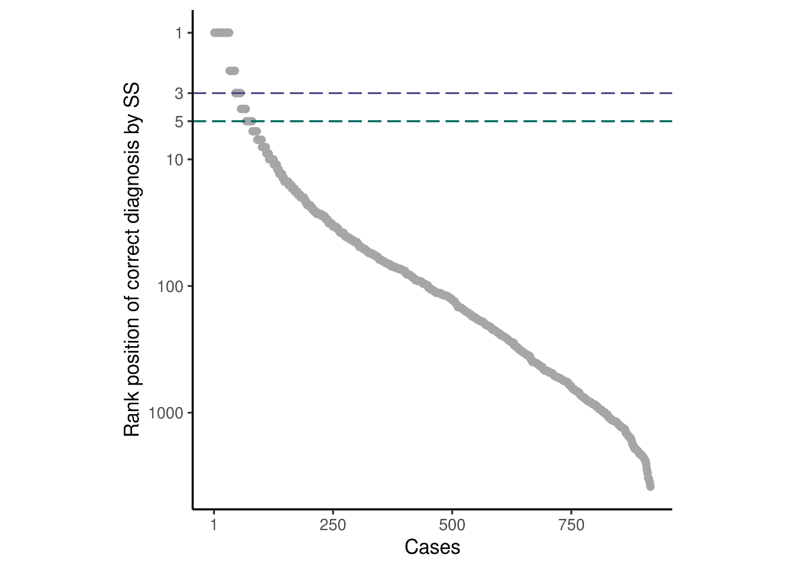

Note: all figures created as part of the study “Diagnosing pediatric mitochondrial disease by exome sequencing: lessons from 2,000 suspected cases”
by Stenton et al., (in submission) led by Dr. Holger Prokisch at the Technical University of Munich.

Number of informative (non-redundant) HPO phenotypes collected per patient, stratified by underlying molecular diagnosis.
Abbreviations: MD, mitochondrial disease; MD-phenocopy, mitochondrial disease phenocopy.

Number of systems involved in the patient’s clinical presentation, stratified by underlying molecular diagnosis.
grid::grid.raster(img)
Frequency of HPO terms stratified by the underlying molecular diagnosis.
grid::grid.raster(img)
HPO term enrichment analysis comparing solved MD and MD-phenocopy patients depicting the odds ratio with the 95% confidence interval (confidence interval limits >5 are not shown). Nominally significant results are depicted in color, results with multiple-testing corrected significance are depicted with filled shapes (adjusted p value ≤0.05).

Distribution of the Nijmegen MDC score (grey bars) in the study population and the corresponding correlation to the diagnostic rate (purple), proportion of P/LP variants in MD genes (green), and proportion of P/LP variants in MD-phenocopy genes (blue). Increase in the Nijmegen MDC score was reflected by increase in the overall diagnostic rate, increase in the proportion of solved MD, and decrease in the proportion of MD-phenocopies.

Receiver operator characteristic (ROC) curves for the:
Nijmegen MDC score (AUC MD vs. MD-phenocopy 0.68, 95% CI 0.64-0.71),
Revised MDC score (AUC MD vs. MD-phenocopy 0.63, 95% CI 0.60-0.67), and
elevated serum lactate (AUC MD vs. MD-phenocopy 0.67, 95% CI 0.64-0.70)
in stratifying the MD and MD-phenocopy patients.

Proportion of patients meeting criteria indicative of MD in our study population, stratified by underlying molecular diagnosis.

Solved patients ordered by the rank of their respective disease-causing gene amongst all OMIM disease genes by HPO phenotype semantic similarity (SS). Patients above the horizontal lines mark those in whom the correct gene defect was predicted by HPO phenotype within the highest three and five semantic similarity scores, respectively.
Abbreviations: SS, semantic similarity.